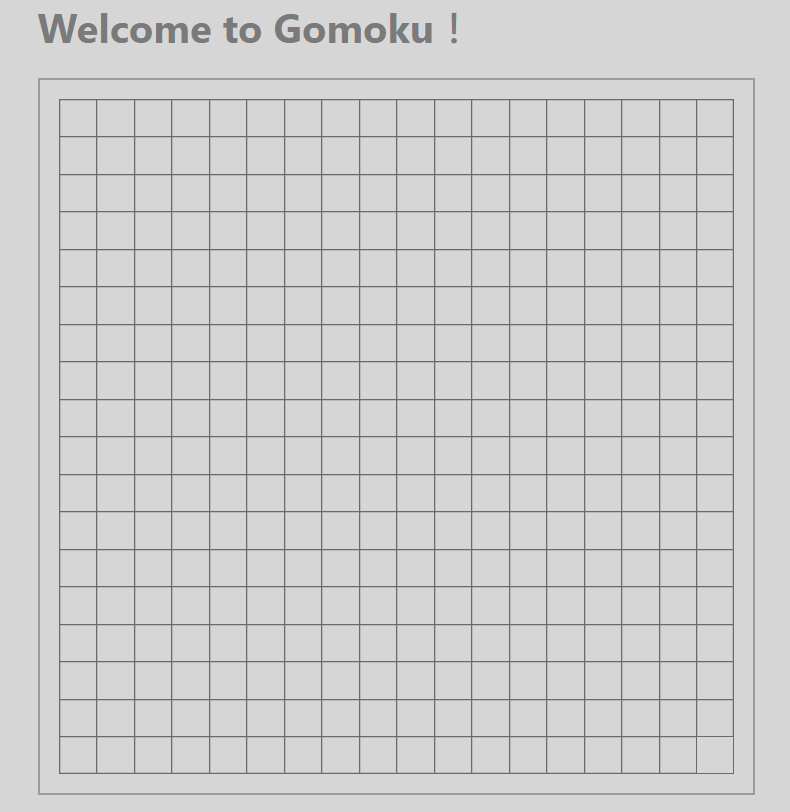

以前沒有想過我會被這個東西給雷到。
簡述
在談這兩個東西以前，先來聊聊我是怎麼踩到這個地雷的吧。
這是我當初在做「五子棋」的時所發生的情境：
為了儲存棋盤的狀態，我開了一個像這樣的資料結構：
1 | const pieces = [ |
簡單來說就是一個用來表示 19 x 19 棋盤的二維陣列，第一層代表 y 軸，第二層代表 x 軸，所以 pieces[0][0] 代表第一排的第一支棋，piecesp[1][0] 代表第二排的第一支棋，以此類推。
當時要做的事情很簡單，就是在下棋時根據「被點擊的座標位置」來更新 state。
會講 state 這個詞就暗示我當時是用 React 來寫的，所以並不能用這種 piecesp[y][x] 的方式來改，而是得產生一個新的 state 才行。
所以，最簡單的作法就是先複製一份原本的陣列，再把要改的地方改掉就好，結果我就寫了這玩意兒：
1 | // 複製一份原本的陣列 |
接著就出現了這幅詭異的現象：

當時的我感到懷疑人生，明明我給的座標就是 newPieces[0][18]（最右上角），怎麼會所有的 newPieces[n][18]（整個直排） 都一起改變了？
找了半天找不到原因，甚至後來直接把值寫死來測試，但還是得到一樣的結果，整個人都不好了（X
直到後來查了一些資料以後，我才理解原來是「淺拷貝」在背後作怪。
淺拷貝與深拷貝的差別
在講差別之前，我們可以先來看一下淺拷貝的範例，理解它會產生什麼問題：
1 | const array = ['A', 'B', ['C']]; |
不了解淺拷貝的話就會很直覺的說：
「當然是 ['A', 'B', ['C']] 呀！」
可是真的是這樣嗎？其實正確答案是：['A', 'B', ['Z']]
如果你試著把這兩個值做比對的話，就會發現結果出乎意料：
1 | console.log(copyArray[2] === array[2]); // true |
要記得像 Array 或 Object 這種 non-primitive 的變數儲存的都是「Reference」，不是真正的值，所以當你去改兩個指向同一個 reference 的變數，當然就會兩個一起改變。
好像拉得有點遠，所以能告訴我淺拷貝是什麼了嗎？
- 淺拷貝就是只能複製第一層的陣列或物件
- 淺拷貝就是只能複製第一層的陣列或物件
- 淺拷貝就是只能複製第一層的陣列或物件
以剛剛的例子來說，如果你這樣子做：
1 | console.log(copyArray === array) // false |
會發現如果只比較第一層的陣列，得到的結果會是 false，代表兩個東西是不一樣的，因為淺拷貝本來就可以複製「第一層」的東西。但如果是第二層的話就沒辦法了，它還是會指向同一個 Reference，所以第二個結果才會是 true。
怎麼分辨淺拷貝與深拷貝？
這部分就要靠你自己搜尋了，Google 一下就蠻多答案了，總之大部分你常用的 slice、map 或 ... 都屬於淺拷貝。
而深拷貝因為還蠻麻煩的，所以如果你跟我一樣沒被雷過的話可能根本沒用過深拷貝這玩意兒。
總之呢，深拷貝大多數會依賴套件來做，因為它比較複雜一點，這邊隨便貼幾個我在網路上找到的範例：
1. 透過 jQuery 的 $.extend：
1 | let obj = {name: '王康寶', age:{child: 18}} |
2. 用 lodash（也是某個套件）
1 | let obj = {name: '王康寶', age:{child: 18}} |
最後是一個純 JavaScript 的方式，就拿我們剛剛的範例來做吧：
1 | const array = ['A', 'B', ['C']]; |
這方法還蠻妙的，不過要注意沒辦法用內容有 function 的值，而且效能也不是那麼好。
最後的最後
所以回到一開始五子棋的例子，為什麼在我點了 newPieces[0][18] 以後會把所有的 newPieces[n][18] 給更新？
不如直接寫個範例來測試吧：
1 | const array = [ |
結果就會發現兩個 array 的第一排最後一個值都同時被改了。
這邊要先提醒，我們在 React 裡複製原本的 state 如果是淺拷貝，代表改東西的話也會動到原本的 state。
這可麻煩大了，畢竟 React 非常強調 state 是「Immutable（不可以變）」的，所以去動到原本的 state 絕對會有一些問題。
雖然我還不明確知道實際發生了什麼，但至少知道當我們用淺拷貝時，會改到原本的 state，因此一定會產生一些問題，先知道這些就夠了。
附註
後來我發現上面的講法是錯的，實際的問題跟改了 React 的 state 沒有太大關連，而是因為 Array.prototpye.fill 這個內建函式引起的問題。
首先呢，根據 MDN 的說明：
當 fill 方法獲得一個傳入的物件，會將傳入的物件位置進行複製，並把其參考值（reference）之拷貝填入陣列中。
意思就是說如果你 fill 裡面放的是屬於「Object」的東西，那產生出的值都是 Reference，不是各自獨立的值，舉個例子：
1 | var arr = Array(5).fill(null) // [null, null, ...] |
這邊先用 fill 產生了二維陣列，接著再對二維陣列裡的第一個陣列 push 一個新的值，依照常理會認為只有第一個會新增，但結果卻是：
1 | [ |
這就上面提到的 reference，不管是 arr2[0]、arr[1] 還是 arr[2]，它們指向的都是同一個 reference，這就是為什麼明明只改了一個，卻每個都被改變了的原因。